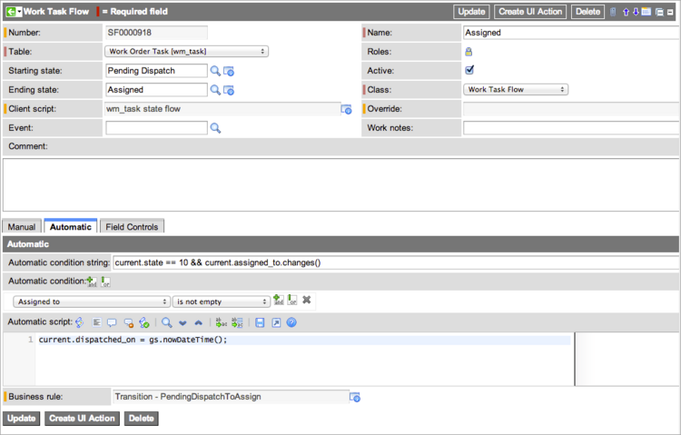

SM States
Contents
1 Overview
From creation until closure, Service Management (SM) application requests for work (that is, work orders and facilities requests), and their respective tasks follow a life cycle tracked by the State field in the following SM applications:
- Work Management
- Facilities Service Management
The life cycle is controlled through business rules and UI actions that are updated by the system automatically.
| |
Note: In the Fuji release, Work Management was renamed Field Service Management. If you are using a version prior to Fuji, refer to the Work Management - Versions Prior to Fuji pages. |
2 SM Request States
SM requests follow a specific life cycle. The State field on the record is always read-only. For detailed information about the actions that trigger a state change on a request, see Managing Work Orders or Managing Facilities Requests.
| State | Description |
|---|---|
| Draft | Request initiator adds information about the work to be done. |
| Awaiting Qualification | Request has been fully described by the initiator and can be processed by a qualifier. |
| Qualified | Request is fully qualified, meaning that all technical information to complete the request tasks has been added, but work has not started. |
| Work In Progress | Work has started. |
| Closed Complete | Request was completed to specification. |
| Closed Incomplete | Request could not be completed as specified. |
| Cancelled | Request was cancelled. |
Additionally, progress through the request life cycle is shown visually with a process flow formatter above the request record.

3 SM Request Task States
Like SM requests, their associated tasks follow a specific life cycle. The State field on the request task record is always read-only. For detailed information about the actions that trigger a state change on a request task, see Executing Work Order Tasks or Managing Facilities Request Tasks.
| State | Description |
|---|---|
| Draft | Qualifier is not done describing the work. |
| Pending Dispatch | Request task is ready to be assigned. The parent request state changes to Qualified if all associated tasks are in Pending Dispatch or a later state. |
| Assigned | Request task is pending acceptance from the assigned agent. |
| Accepted | Request task has been accepted by the agent and is ready to be done. |
| Work In Progress | Work on the request task has started. The parent request state changes to Work In Progress if no associated tasks are in Draft state. |
| Closed Complete | Request task was completed to specification. |
| Closed Incomplete | Request task could not be completed as specified. |
| Canceled | Request task was canceled. |
In addition to the State field, the different request task states are also shown visually at the top of each task record with the process flow formatter.
4 State Flow Customization
State Flows control the sequence in which records transition between states in SM applications. An administrator can perform the following tasks:
- Add or delete states.
- Trigger events on particular state transitions.
- Transition to another state automatically when data in a request or its task changes, or change states manually when the user clicks a button.
- Limit the choice list for the State field to those end states that are valid transitions from the given start state.
- Control the visibility and behavior of selected fields on a target table when records in that table change states.
- Create custom state flows. Creating custom state flows requires scripting knowledge.
These features require the State Flows plugin, which is activated automatically with the Work Management plugin starting with the Eureka release. State Flows is added automatically to an existing work management system during an upgrade to Eureka.
| |
Note: Users with the wm_admin role can create, read, update, and delete only work order flows and work task flows. Users with the facilities_admin role can create, read, update, and delete only facilities request flows and request task flows. Users with the wm_admin role cannot manipulate facilities records, and users with the facilities_admin role cannot manipulate work order records. |
4.1 How SM Request State Flows Work
State flows replace the standard process that controls how requests and their associated tasks tasks move between states. The ServiceNow system creates business rules, client scripts, and UI actions that perform the transitions and field controls you specify. These programming elements remain in use while the state flow records that use them are present. When state flows on an SM application table are deleted, the system attempts to delete any unnecessary programming elements that were created on that table. You can limit the selections for the State field to valid states for the transition, based on the starting state. For more information, see How State Flows Work.
State flows provide the following controls:
- Manual transitions: A UI action, created automatically by the system when you provide a condition or a script, initiates a transition.
- Automatic transitions: A business rule, created automatically by the the system when you provide a condition and a script, initiates a transition when changes are made to a request or task.
4.1.1 Available with State Flows
- Custom transitions: Customize the order in which states can change for requests and task records.
- Field controls: Control the behavior and visibility of specific fields when a task changes states or reaches a specified end state.
- State choice list: Limit the values offered in a task record's State field to valid states for that transition. This is the same client script that the system creates to manage field controls for state transitions.
- Events: Trigger events when a state transition occurs or when a record reaches a specific end state.
4.1.2 Start and End States
You can create a custom state flow for processing that must occur when a task record makes a specific transition from one state to another. These records require a starting state and an ending state, and processing occurs during the transition between states. To perform some processing when a task record reaches a particular end state, you only need to define the end state. In some cases a state flow can have a starting state only, such as when you need to perform some type of cleanup after a task is canceled. A state flow might have no starting or ending state if the processing in the record applies to more than one state transition.
The solution is to store the business rule or client script in a state flow record and create a condition to trigger processing for any state change that requires it. An example of this in work management is the Roll Up Changes business rule on the Work Order Task [wm_task] table. This business rule rolls up state changes that occur in tasks to the parent work order.
4.2 Customizing a Flow
Before customizing a state flow, make a copy of the state flow record for the transition you want to change and do all your customizations in the copied record. This allows the system to update the default state flow record automatically during an upgrade and enables you to revert to the default record if necessary. Make sure to deactivate the original record so the system cannot use it.
| |
Note: Customizing state flows requires scripting knowledge. |
- Navigate to the class of state flows you want to customize. For example:
- State Flows > Work Order Flows
- State Flows > Work Task Flows
- Open the record for the transition you want to customize.
- Right-click the form header and select Insert and Stay.
- The system clears any values from the Business rule and UI action fields. A notification appears at the top of the form describing the action taken.
- Ensure that the Active check box is selected.
- In the appropriate section, configure a transition method:
- Manual: Click Create UI Action to create a button on the form that enables users to execute the transition manually. The system uses the value in the Name field as the label for the UI action. The UI action executes the script in the Manual Script field when the conditions are true.
- Automatic: Click Create Business Rule to create the business rule. The business rule executes the script in the Automatic Script field when the conditions are true.
- Click Create Client Script to create the script that limits the values available a record's State field choice list to valid states for that transition.
- Complete the Field Controls section to control how specific fields appear when a record changes states.
- The system enforces the field controls with the same client script you created to filter the choice list for the State field.
- Click Update.
- Reopen the source record you copied and clear the Active check box.
- Deactivating the original record allows the system to upgrade it normally when the instance is upgraded and prevents the system from using the record rather than your custom state flow.
- Open the copied state flow record you want to customize.
- Fill in the fields, as appropriate (see table).
{kind=link}
| Field | Description | |
|---|---|---|
| Number | Record number automatically generated by ServiceNow. | |
| [Required] Table | Table on which the state flow record runs. The possible tables are:
| |
| Starting state | Name of the state at the beginning of the transition. | |
| Ending state | Name of the state at the end of the transition. | |
| Client script | Client script to run for this transition. The client script controls the available starting and ending states you can select by limiting the contents of the State choice list to valid states. | |
| Event | Name of an existing event to trigger when this transition occurs. See Triggering Events on State Changes for more information. | |
| Name | [Required] State name as it appears in the choice list. | |
| Roles | Roles required to configure the State field that uses the custom transition. | |
| Active | Switch for enabling or disabling this state flow record. | |
| Class | Available state flow classes:
This field is required for users with the admin role. Users with the wm_admin role can only create state flow records in the Work Order Flow and Work Task Flow classes and cannot edit this field in the record. | |
| Override | Default starting value for the State field on all new records for the table named in the state flow record. See Dictionary Overrides for configuration procedures. | |
| Work notes | Comments about this state flow transition. For details about how these notes are used, see Work Notes. | |
| Comment | Details about the customized record. | |
| Manual (Runs scripts from a UI action that requires the user to click a button or related link.) | ||
| Manual condition string | Conditions for enabling a UI action that cannot be defined with the condition builder. For example, you can use this string to define UI actions for mobile devices. This condition has an [and] relationship with the condition in the Manual condition field. | |
| Manual condition | Condition builder for enabling a UI action that can be defined for fields in the target table. This condition has an [and] relationship with the condition in the Manual condition string field. | |
| Manual script | Script that defines what the UI action does when the conditions are true. This script runs when the user clicks a button or a related link. | |
| UI action | [Read-only] Names the UI action to enable for this transition. By default, this UI action creates a button on the task form. For instructions on making this UI action available elsewhere on the form, see Editing UI Actions. Click Create UI Action to create the button. The button inherits the name of the state flow record in which it was created. | |
| Automatic (Runs a business rule automatically when a task record is changed and updated.) | ||
| Automatic condition string | Conditions for running the business rule that cannot be defined with the condition builder. For example, use this condition to evaluate if the proposed transition is a valid flow. This condition has an [and] relationship with the condition in the Automatic condition field. | |
| Automatic condition | Conditions for running the business rule that can be defined for fields in the target table. This condition has an [and] relationship with the condition in the Automatic condition string field. | |
| Automatic script | Script that performs additional work when the condition is true. This script can do tasks such as update the date and time the transition occurred or notify someone of a milestone. | |
| Business rule | Name of the business rule created for this transition. The business rule has a condition to ensure the validity of the flow. If that condition is true, the business rule performs the transition requested, using the starting and ending states from the Work Order Flow or Work Task Flow form. | |
| Field Controls (Determines field properties when a record transitions between states.) | ||
| Mandatory fields | Fields required when this transition occurs or when the Ending state is the current state of a work order or work order task. | |
| Read only fields | Fields set as read-only when this transition occurs or when the Ending state is the current state of a work order or work order task. | |
| Visible fields | Fields made visible when this transition occurs or when the Ending state is the current state of a work order or work order task. | |
| Not mandatory | Fields set as optional when this transition occurs or when the Ending state is the current state of a work order or work order task. | |
| Not read only | Fields that can be edited when this transition occurs or when the Ending state is the current state of a work order or work order task. | |
| Not visible | Fields hidden when this transition occurs or when the Ending state is the current state of a work order or work order task. | |
4.2.1 Dictionary Overrides
A dictionary override in a state flow defines the starting state for all new records in a specific table. You set an override in tables that extend a base table only, so that your customizations are applied only to the extended table.
- In a state flow record, select an Ending state.
- This is the override value which becomes the starting state for all new records in the table named.
- Click Create Default Value.
- The system populates the Dictionary override field with a value of state, which is the field in the task table affected by the override. The Dictionary override field is read-only. After the override is created, the system hides the Create Default Value button on all subsequent state flow forms for that table.
4.2.2 Work Notes
Work notes are an important part of the state flow process and are used to communicate information about state transitions. The state flow adds this work note into the Work notes field of any task making this transition. For example, you might include the note, Task rejected by agent, in the Reject state flow, which occurs when the task moves from Assigned to Pending Dispatch. If an agent rejects the task and fails to enter a work note, this note tells the dispatcher why the task reappeared in the dispatch queue. Work notes added by an agent rejecting the task are appended to the work notes that are inherited from the the state flow.
These rules apply to state flow work notes:
- For a state flow with no Starting state, the work note is added every time the task transitions to the Ending state.
- For a state flow with a Starting state and an Ending state, the work note is added only when the task transitions from that starting state to that ending state.
- If two state flows with work notes have the same Ending state, but only one has a Starting state, the system adds the work notes from the state flow with the starting state. This better matches the state flow work note to the more important transition between specific starting and ending states. In the example here, the work note information is more pertinent to a task moving from Assigned to Pending Dispatch than to a task that reaches the Pending Dispatch state from an undetermined beginning state.
4.2.3 Field Controls
You can define controls for individual fields that are enforced when a record transitions between states. Settings in the Field Controls section of the State Flow form enable you to apply field controls when the system detects a specified state transition or when the end state is the current state when the form is opened. The control is applied only to existing fields on the form. State flows cannot add fields to the form.
For example, you might want the Problem field to be visible when an incident moves to the Awaiting Problem state. If the incident state changes to Awaiting User Info, you hide the Problem field and make the Caller field mandatory.
The best practice when creating field controls is to configure state flow records with an ending state only and to create the correct behavior for every ending state you want to control. This ensures that the field controls are set properly when the user selects a new state, and also when the user returns a record's State field to the original state. Only specify a full state transition, with both a starting and ending state, when you want a particular behavior for that precise state transition.
| |
Note: State flows use client scripts to enforce field controls. It is possible that your settings can be changed by existing UI policies, which execute after client scripts. |
ServiceNow creates the following objects as needed to enforce field properties in state flows:
| Type | Name | Description |
|---|---|---|
| Business rule | State Flow Notes for <table name> | Enforces mandatory fields for the table on which that field behavior is defined. |
| Client script (onLoad) | <table name> state flow | Sets possible states and initial mandatory, read-only, and visible properties when a record is loaded. |
| Client script (onChange) | <table name> change state flow | Sets updated mandatory, read-only, and visible properties when a record is changed. |
4.2.4 Triggering Events on State Changes
You can configure a state flow to trigger a registered system event when a task transitions from a starting state to a specified end state. For example, you can use events to trigger email notifications and create script actions. When you attach an event to a state flow, ServiceNow creates a business rule called State Flow Events for <table name> for the table specified in the state flow. If you specify a start and end state, the business rule executes when the record transitions from the start state to the end state. If the state flow only specifies an end state, the business rule executes whenever that end state is reached. The system creates one business rule for all state flows containing events on a single table. When all events or all state flows on a table are deleted, the system deletes the business rule.
To create an event that fires when a work order task moves from a starting state of Work in Progress to an end state of Closed Complete:
- Register a new event on the Work Order Task [wm_task] table called task.closed.
- Navigate to State Flows > Work Task Flows.
- Open the state flow record Close Complete.
- Select task.closed in the Event field and save your changes.
{kind=link}
{kind=link}
4.2.5 Rebuilding State Flows
When you use an XML file to import a state flow record into an instance, the system attempts to match the incoming states with existing states by comparing sys_ids. Because the sys_ids of items in a choice list can vary between instances, the system can fail to match the states, even though they are otherwise identical. When matching fails, the start and end states of affected records are left blank or contain numeric values. To repair these records navigate to State Flows > Admin > Rebuild State Flows. This module runs a script that compares the numerical value of each item in the State field choice list until it finds a match in the imported state flow record.
4.2.6 State Flow Cleanup
The business rules, client scripts, and UI actions that the system creates automatically to perform custom transitions exist only while the state flow records that use them are present. When all the state flows on a table are deleted, the system attempts to delete any unnecessary programming elements that were created on that table, using these criteria:
| Element | Deleted When |
|---|---|
|
UI action |
The state flow that created it is deleted. |
| Business rule that processes events triggered by a state flow | All state flows for the table specified that have events configured are deleted. |
| Client script (onLoad) | All state flows for the table are deleted. |
| Client script (onChange) | All state flows with field controls are deleted. |
| Work notes business rule | All state flows with field controls or work notes are deleted |
4.3 State Flow Example
Your business processes might require work order tasks to be accepted automatically when dispatched to an agent. To accomplish this, you must create a new state flow record that automates the transition from Pending Dispatch to Accepted and bypasses the Assigned state in which agents can reject tasks. This prevents the system from running the manual script associated with UI actions. The automatic script performs the jobs that the manual script performed, such as updating the date and time the task was dispatched, or to do additional work such as sending a notification.
- Navigate to State Flows > Service Management > Service Order Flows.
- Open the Assigned record that defines a task transition from a starting state of Pending Dispatch to an ending state of Assigned.
- This is an automatic state change that occurs when an agent's name is added to the Assigned to field and the task is updated.
- 
- Change the name of the state flow.
- In this example, change the name to Skip Agent Acceptance.
- Change the value in the Ending state field to Accepted.
- This transition allows you to bypass the Accept state flow record that enables agents to reject tasks.
- Do not change the settings in these fields:
- Automatic condition string: This condition ensures that the current state is at Pending Dispatch and the value in the Assigned to field changes: current.state == 10 && current.assigned_to.changes().
- Automatic condition: The condition [Assigned to] [is not empty] ensures that all dispatched tasks are accepted automatically.
- Note: These two condition statements have an [and] relationship. In this example, the business rule runs when a task in a state of Pending Dispatch is assigned to any agent.
- Automatic script: The automatic script sets the time the task was dispatched, using the method: current.dispatched_on = gs.nowDateTime();.
- Copy the record using the Insert and Stay command.
- This action increments the record number and clears the Business rule field. The system automatically creates a new business rule, using the name of the new state flow record. The Skip Agent Acceptance business rule moves the task from Pending Dispatch to Accepted automatically when a dispatcher enters a user name in the Assigned to field. Note that any changes you make to this state flow record in the future are executed by this business rule.
- Ensure that the Active check box is selected.
- In the Work Task Flows list, locate the Accept state flow record and change the Active status to false.
- This action deactivates the transition that allows agents to accept tasks and moves the state flow directly from Pending Dispatch to Accepted.
{kind=link}
{kind=link}